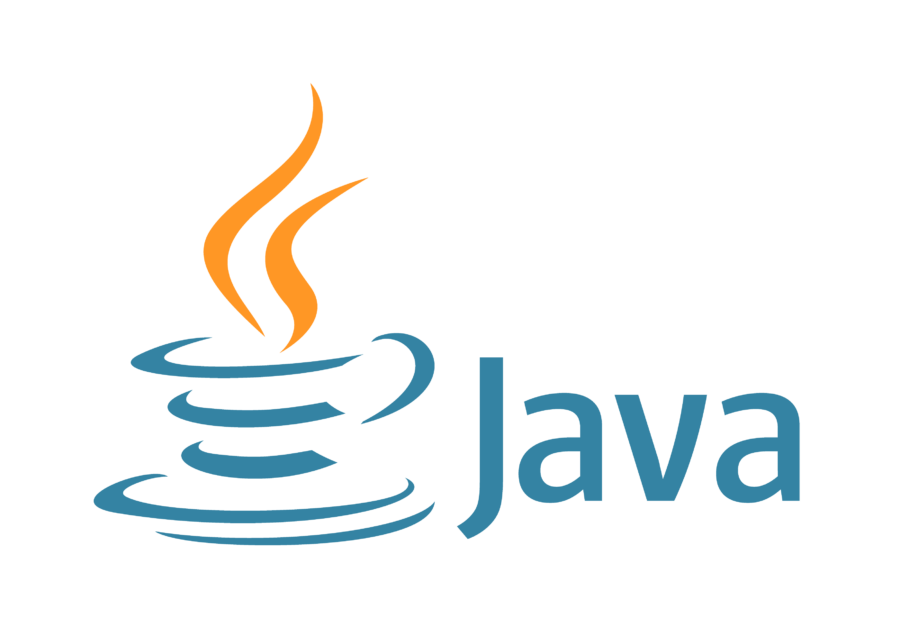
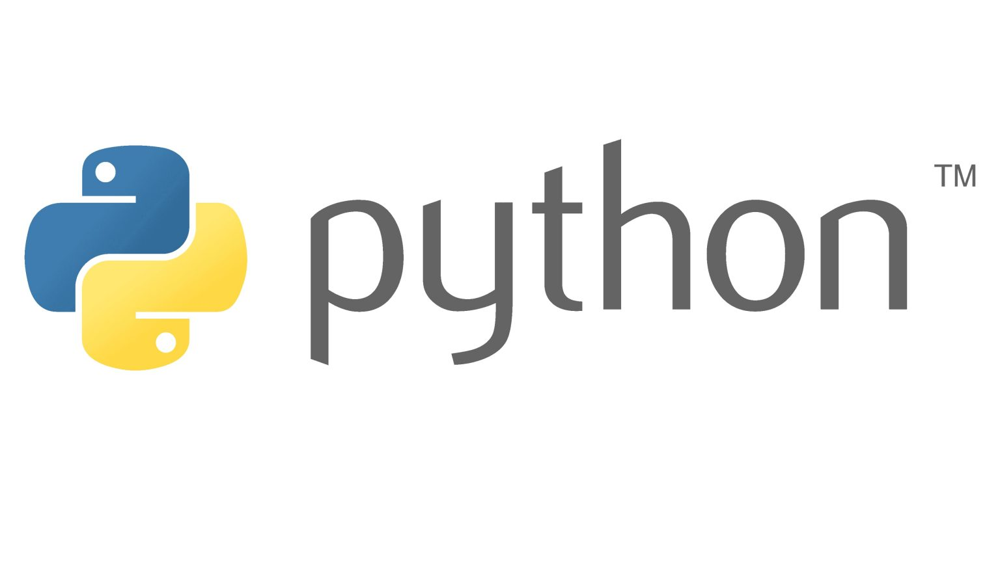
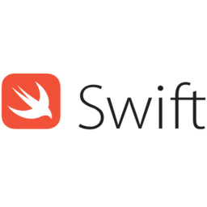

Java

Java dikenal dengan moto “Write Once, Run Anywhere” yang memiliki arti bahwa Java adalah bahasa
pemrograman yang mampu dijalankan di berbagai platform tanpa perlu penyesuaian ulang di platformnya.
Contohnya, dapat dijalankan di Android, Linux, Windows, dan lain-lain.
Alasan kenapa Java dapat dijalankan di mana saja, karena bahasa pemrograman ini memiliki sistem
syntax atau kode pemrograman level tertinggi. Syntax akan disusun dengan Java Virtual Machine (JVM)
menjadi kode numeric (bytescode) platform, sehingga aplikasi Java dapat dijalankan di berbagai
perangkat.
Singkatnya, Java adalah sebuah bahasa pemrograman. Biasanya digunakan untuk pengembangan
bagian back-end dari software, aplikasi Android, dan juga website. Java juga memiliki
fleksibilitas, sehingga telah dijalankan di 13 miliar perangkat. Contoh aplikasi yang menggunakan
Java adalah Netflix, Spotify, hingga Twitter.
Selengkapnya →
Python

Singkatnya, python adalah bahasa pemrograman yang penerapannya tidak hanya pada dunia website
saja, akan tetapi pada bidang-bidang lainnya, seperti proses system scripting hingga pembuatan game.
Menjadi bahasa pemrograman yang sangat populer di kalangan para programmer,
python pertama kali dikenalkan kepada publik pada tahun 1991 oleh programmer komputer
berkebangsaan Belanda, yakni Guido van Rossum.
Pria yang kini tinggal di California, Amerika Serikat ini pada awalnya menciptakan bahasa
pemrograman python karena ingin mengisi waktu luangnya ketika kantor tempat dirinya bekerja harus
tutup sementara untuk merayakan liburan natal. Namun, siapa sangka, proyek yang dirinya kerjakan
saat itu memberikan dampak besar pada dunia pemrograman hingga saat ini.
Berkat jasanya menciptakan python, Guido van Rossum pun pada tahun 2002 mendapatkan penghargaan
Awards for the Advancement of Free Software dari FSF (Free Software Foundation), yakni sebuah
organisasi yang kantor pusatnya berada di Massachusetts, Amerika Serikat dan merupakan yayasan
pendukung untuk pengembangan perangkat lunak bebas (free software).
Bahasa pemrograman python adalah pilihan tepat bagi para pemula di bidang IT karena memang mudah
untuk dipahami. Strukturnya pun tidak serumit bahasa pemrograman lainnya karena python lebih
mengutamakan case sensitive, yakni besar kecilnya rangkaian huruf yang kamu input akan mempunyai
fungsi berbeda bagi python.
Selengkapnya →
PHP

PHP Adalah bahasa scripting server-side, Bahasa pemrograman yang digunakan untuk mengembangkan
situs web statis atau situs web dinamis atau aplikasi Web. PHP singkatan dari
Hypertext Pre-processor, yang sebelumnya disebut Personal Home Pages.
Script sendiri merupakan sekumpulan instruksi pemrograman yang ditafsirkan pada saat runtime.
Sedangkan Bahasa scripting adalah bahasa yang menafsirkan skrip saat runtime. Dan biasanya
tertanam ke dalam lingkungan perangkat lunak lain.
PHP adalah bahasa pemrograman umum yang berarti php dapat disematkan ke dalam kode HTML, atau dapat
digunakan dalam kombinasi dengan berbagai sistem templat web, sistem manajemen konten web, dan
kerangka kerja web.
Selengkapnya →
C++

C++ adalah salah satu bahasa pemrograman yang merupakan hasil dari pengembangan bahasa C.
Bedanya, C++ lebih berorientasi pada objek dan membagi permasalahan ke dalam beberapa kelas
berisi deskripsi objek untuk kemudian dipecahkan melalui metode pengolahan. Program ini banyak
digunakan oleh perusahaan software raksasa seperti Adobe dan Firefox.
Selengkapnya →
Javascript

Javascript adalah bahasa pemrograman yang digunakan oleh para pengembang untuk membuat website
menjadi lebih dinamis. Ibaratnya, adanya Javascript ini menghadirkan kehidupan pada suatu website,
sehingga menciptakan interaksi antara situs dan pengguna.
Javascript dirancang oleh seorang karyawan Netscape, Brendan Eich pada tahun 1994 ketika
internet dan web mulai berkembang. Bahasa pemrograman ini telah melalui berbagai pergantian nama
mulai dari Mocha, Moda, LiveScript hingga saat ini secara resmi menjadi Javascript.
Selengkapnya →
Ruby
Ruby adalah bahasa pemrograman berbasis skrip dan berorientasi pada objek. Bahasa Ruby pertama kali
diluncurkan di tahun 1995 dan dikembangkan oleh programmer asal Jepang bernama Yukihiro Matsumoto.
Bahasa ini bersifat open-source dan biasanya digunakan untuk membangun serta mengembangkan aplikasi web
yang cepat dan sederhana. Selain itu, Ruby juga bisa dijalankan lintas platform seperti Linux, Windows,
bahkan DOS juga.
Selengkapnya →
Swift

Swift adalah salah satu bahasa pemrograman berorientasi objek yang dibangun untuk produk dari Apple.
Dasar bahasa ini adalah Objective-C dan dirancang untuk berjalan bersama framework Cocoa dari Apple.
Melihat dari dasar bahasanya, bahasa C, C++ dan Objective-C dapat berjalan dengan Swift di program yang
sama.
Bahasa Swift dikembangkan oleh Chris Lattner dengan tujuan untuk menyelesaikan kesulitan yang ada
di bahasa Objective-C. Bahasa ini diluncurkan pada tahun 2014 dan diumumkan di Worldwide Developers
Conference (WWDC) milik Apple.
Selengkapnya →